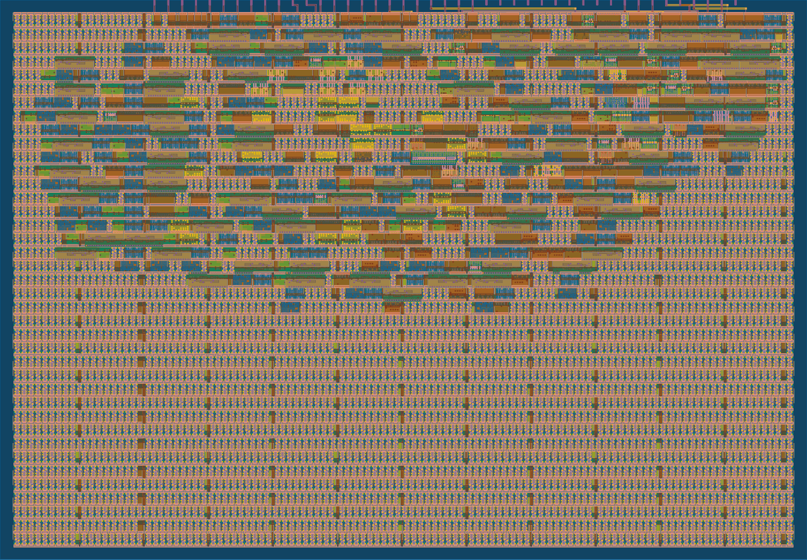

One piece of HZN-1, built as a real chip layout
Most of HZN-1 is a concept. This block is real. It's the checker that throws away damaged aircraft broadcasts, written in Verilog, tested on real ADS-B messages and turned into a layout for SkyWater's 130 nm chip process.
Passes Tiny Tapeout's precheck · not yet fabricatedThe layout
This is the actual layout a fab would build from, drawn from the GDS file. Hover over it (or press and drag) to look closer.

tt_um_raghavv711_hzn1_crc · SKY130Each colored block is one logic cell from SkyWater's library. They're packed near the top edge, where the pins are. The even pattern below is filler and power taps: the checker only needs about a third of its tile. The thin lines across the top are the 24 input and output wires.
Run the checker
Pick a real message and press Run. Your browser takes the same steps the chip does: one bit per tick. Click any bit to flip it, then run again.
Ready.
The tests
Each test runs twice on GitHub: once on the Verilog, and again on the finished netlist of SkyWater logic cells, the version a fab would build.
| Test | What it shows | Design | Netlist |
|---|---|---|---|
| KLM1023 8D4840D6202CC371C32CE0576098 | The message the HZN-1 story follows passes, and the chip reads back its ICAO address 4840D6 | ✓ pass | ✓ pass |
| Six real broadcasts | Identification, position and velocity messages from real aircraft all pass | ✓ pass | ✓ pass |
| Short message | A 56-bit reply is recognized as short from its first bit and checked over 56 bits | ✓ pass | ✓ pass |
| Every single-bit flip | Flip any one of KLM1023's bits and the chip says BAD, with the same syndrome as the model | ✓ pass | ✓ pass |
| Random messages | 30 random messages, half corrupted, match a Python model of the check exactly | ✓ pass | ✓ pass |
| Start and overrun | START clears a half-received message; bits after the last one are ignored | ✓ pass | ✓ pass |
How it works
Every Mode S message ends with a 24-bit check code. The plane computes it by dividing the rest of the message by a fixed number, 0x1FFF409, in a math where adding is the same as flipping bits.
The chip does the same division one bit at a time with a 24-bit shift register. When the top bit and the incoming bit differ, it flips a fixed pattern of bits. After the whole message, including the check code, a remainder of zero means nothing was damaged.
If it isn't zero, the leftover is the syndrome. Each single wrong bit leaves a different one, so a full decoder can use it to find and fix the bit. The chip lets you read it back.
- DATA, STROBE
- One message bit per rising edge, through two-flop synchronizers
- START
- Clears for the next message
- DONE, OK, BAD
- The answer, once the last bit is in
- READ[7:0]
- ICAO address, syndrome or bit count, a byte at a time
// each time a bit arrives wire fb = rem[23] ^ bit_in; rem <= {rem[22:0], 1'b0} ^ (fb ? 24'hFFF409 : 24'd0); count <= count + 7'd1; if (count == last) done <= 1'b1; // the answer assign ok = done && (rem == 24'd0); assign bad = done && (rem != 24'd0); // the first bit sets the length: // formats 16+ are 112 bits, the rest 56
From layout to chip
The layout was built on GitHub's servers with the open-source LibreLane flow and the SkyWater SKY130 process kit, through Tiny Tapeout. It runs at 50 MHz with time to spare, checked hot, cold, slow and fast.
It also passes Tiny Tapeout's precheck, so it's ready for a shared chip run alongside hundreds of other small designs. It hasn't been manufactured yet. The next blocks on the way to a full HZN-1 would be the bit slicer that turns radio pulses into these bits, and the decoder that turns checked messages into position and speed.